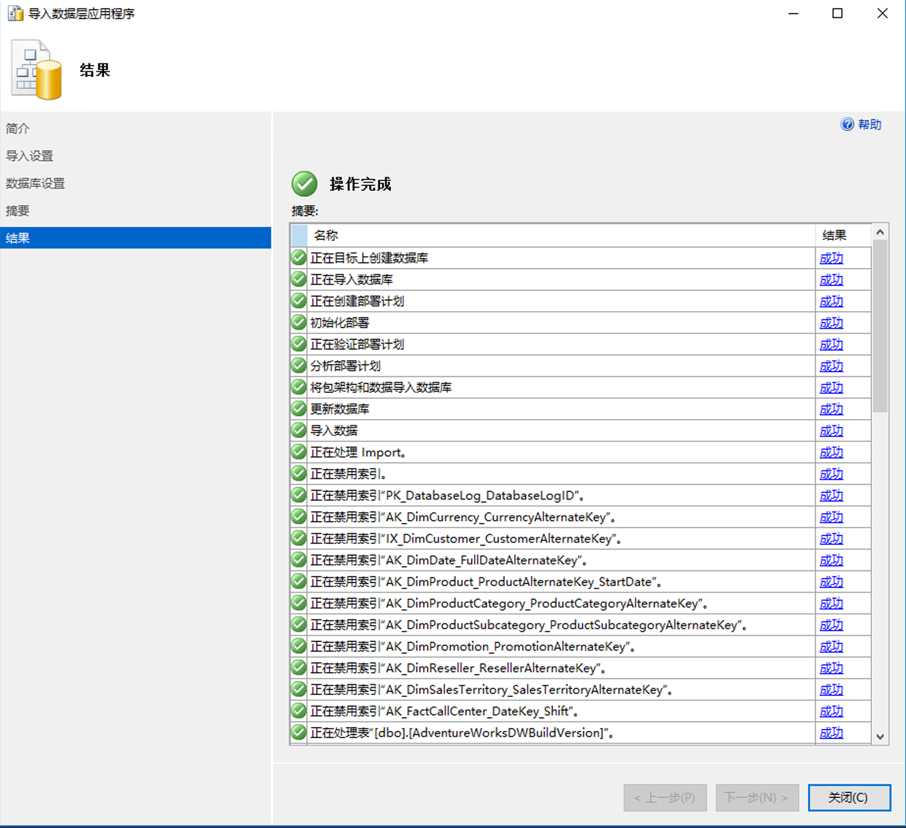

实验室 3 - 实现安全环境
预计用时： 60 分钟
必备项： 在实验室中为模块 2 创建的 Azure SQL 服务器。订阅中的 Azure Active Directory 访问。
实验室文件： 此实验室的文件位于“D:\Labfiles\Secure Environment”文件夹中。
实验室概述
学生将利用从课程中获取的信息，在 Azure 门户和 AdventureWorks 数据库中进行配置，随后实现安全性。
实验室目标
完成本实验室后，你将能够：
-
配置 Azure SQL 数据库防火墙
-
使用 Azure Active Directory 授权对 Azure SQL 数据库的访问
-
管理对数据库对象的访问
应用室场景
你已被聘为高级数据库管理员，帮助确保数据库环境的安全。这些任务侧重于 Azure SQL 数据库。
备注： 练习让你复制并粘贴 T-SQL 代码。请在执行代码前，验证代码是否正确复制并具有恰当的换行符。
练习 1：配置 Azure SQL 数据库防火墙并连接到新数据库
-
在实验室虚拟机中，启动浏览器会话并导航到 https://portal.azure.com。提供适当的凭据。
-
在 Azure 门户顶部的搜索栏中，键入 SQL。SQL 服务器图标将出现。单击 SQL 服务器。单击服务器名称，前往你在实验室 2 中创建的服务器的详细信息页面
-
在 SQL Server 的详细信息屏幕中，将鼠标移到服务器名称右侧，然后单击“复制到剪贴板”按钮，如下所示。
-
单击“显示防火墙设置”（在你刚复制的服务器名称上方）。单击下面突出显示的“+ 添加客户端 IP”，然后单击“保存”。
这将你能够使用 SQL Server Management Studio 或任何其他客户端工具连接到 Azure SQL 数据库服务器。重要提示： 记下你的客户端 IP 地址，稍后将在此任务中使用它。
-
在实验室 VM 上打开 SQL Server Management Studio。粘贴你的 Azure SQL 数据库服务器名称，并使用在实验室 2 中创建的凭据登录：
-
服务器名称：<在此处粘贴你的 Azure SQL 数据库服务器名称>
-
身份验证：SQL Server 身份验证
-
服务器管理员登录名： dp300admin
-
密码： dp300P@ssword!
单击“连接”。
-
-
在“对象资源管理器”中，展开服务器节点，然后右键单击数据库。单击“导入数据层应用程序”。
-
在“导入数据层应用程序”对话框中，点击第一个屏幕中的“下一步”。
-
在“导入设置”屏幕中，单击“浏览”并导航到“D:\Labfiles\Secure Environment”文件夹，再单击 AdventureWorks.bacpac 文件，然后单击“打开”。然后在“导入数据层应用程序”屏幕中，单击 “下一步”。
-
在数据库设置屏幕上，将 Azure SQL 数据库的版本更改为“常规用途”。将“服务目标”更改为 GP_Gen5_2，然后单击“下一步”。
-
在“摘要”屏幕中，单击“完成”。导入完成后，你将看到以下结果。 
-
在“对象资源管理器”中，展开“数据库”文件夹。然后右键单击 AdventureWorks，然后单击“新建查询”。
-
通过将文本粘贴到查询窗口中来执行以下 T-SQL 查询。重要提示： 将 192.168.1.1. 替换为步骤 4 中的客户端 IP 地址。单击“执行”或按 F5。
sqlEXECUTE sp_set_database_firewall_rule @name = N'ContosoFirewallRule', @start_ip_address = '192.168.1.1', @end_ip_address = '192.168.1.1' -
接下来，将在 AdventureWorks 数据库中创建一个包含用户。单击“新建查询”，然后执行以下 T-SQL。确保仍在使用 AdventureWorks 数据库。如果在下面数据库名称框中看到主实例，则可以下拉并切换到 AdventureWorks。
sqlCREATE USER containeddemo WITH PASSWORD = 'P@ssw0rd!'单击“执行”以运行此命令。此命令会在 AdventureWorks 数据库中创建一个包含的用户。将在下一步中使用此用户名和密码登录。
-
导航到“对象资源管理器”。依次单击“连接”、“数据库引擎”。
- 尝试使用步骤 13 创建的凭据建立连接。
你将需要使用以下信息：
- 登录名： containeddemo
- 密码： P@ssw0rd!
单击“连接”。
将看到以下错误。
生成此错误是因为该连接尝试登录 master 数据库，而不是创建用户的 AdventureWorks。若要更改连接上下文，请单击“确定”退出错误消息，然后单击“连接到服务器”对话框中的“选项”，如下所示。
-
在“连接选项”选项卡上，键入数据库名称“AdventureWorks”。单击“连接”。
-
另一个数据库应该出现在对象资源管理器中。
确保选择保留在新添加的数据库上。然后从“对象资源管理器”和“数据库引擎”中单击“连接”。 再次输入以下内容：
- 登录名：containeddemo
- 密码： P@ssw0rd!
单击“连接”。
这次，连接将绕过 master 数据库，并直接登录到 AdventureWorks，这是新创建的用户可以访问的唯一数据库。
练习 2：使用 Azure Active Directory 授权对 Azure SQL 数据库的访问
-
导航到 Azure 门户，然后在屏幕右上角单击你的用户名。

记下该用户名。
重要提示： Azure SQL 数据库的 Azure Active Directory 管理员不支持 Microsoft 帐户（例如 Outlook、Gmail、Hotmail 或 Yahoo 的用户帐户）。你可以使用一种变通方法，即创建一个名为 DBA 的 Azure Active Directory 组，然后将你的用户帐户添加到其中。或者，你可以跳过练习 2。
-
在 Azure 门户中，导航到 Azure SQL 数据库服务器 dp300-lab-xx，然后单击“Active Directory 管理员”旁边的“未配置”。
在下一个屏幕上，单击“设置管理员”。
-
在“设置管理员”屏幕中，搜索你的用户名。找到后，单击以突出显示该用户名，然后单击“选择”。这将返回到上面的 Active Directory 管理员屏幕。单击“保存”完成该过程。这样，你的用户名将成为服务器的 Azure Active Directory 管理员，如下所示
-
打开 SQL Server Management Studio，然后依次单击“连接”、“数据库引擎”。在“服务器名称”中，输入你的服务器名称。将身份验证类型更改为“Azure Active Directory 通用且具有 MFA 支持”。
按提示输入 Azure Active Directory 密码，然后单击“连接”登录数据库。
练习 3：管理对数据库对象的访问
-
在此练习中，你将管理对数据库及其对象的访问。导航回到 SQL Server Management Studio。首先要做的是在 AdventureWorks 数据库中创建两个用户。
在“对象资源管理器”中，右键单击 AdventureWorks 数据库，然后选择“新建查询”。在新建查询窗口中，将以下 T-SQL 复制并粘贴到其中。验证是否已正确复制代码。
CREATE USER [DP300User1] WITH PASSWORD = 'Azur3Pa$$'
GO
CREATE USER [DP300User2] WITH PASSWORD = 'Azur3Pa$$'
GO
你会注意到这些用户是在数据库范围内创建的。因此，如果尝试使用其中一个用户登录，则需要在连接字符串中指定 AdventureWorks 数据库。
- 接下来，你将创建一个自定义角色并向其添加用户。在与步骤 1 相同的查询窗口中执行以下 T-SQL。单击“执行”以运行。
CREATE ROLE [SalesReader]
GO
ALTER ROLE [SalesReader] ADD MEMBER [DP300User1]
GO
ALTER ROLE [SalesReader] ADD MEMBER [DP300User2]
GO
- 下一步是为该角色授予权限。在本例中，要为 Sales 架构分配 SELECT 和 EXECUTE。清除上一个查询的窗口。然后在同一窗口中，单击“执行”以运行以下 T-SQL。从而授予角色权限。
GRANT SELECT, EXECUTE ON SCHEMA::Sales TO [SalesReader]
GO
- 接下来，将在 Sales 架构中创建一个新的存储过程。你会注意到此过程会访问 Product 架构中的一个表。清除上一个查询的窗口。在查询窗口中执行以下 T-SQL。
CREATE OR ALTER PROCEDURE Sales.DemoProc
AS
SELECT P.Name, Sum(SOD.LineTotal) as TotalSales ,SOH.OrderDate
FROM Production.Product P
INNER JOIN Sales.SalesOrderDetail SOD on SOD.ProductID = P.ProductID
INNER JOIN Sales.SalesOrderHeader SOH on SOH.SalesOrderID = SOD.SalesOrderID
GROUP BY P.Name, SOH.OrderDate
ORDER BY TotalSales DESC
GO
- 接下来，将使用 EXECUTE AS USER 命令测试刚刚建立的安全性。这使数据库引擎可以在你的用户上下文中执行查询。清除上一个查询的窗口。在查询窗口中执行以下查询。
EXECUTE AS USER = 'DP300User1'
SELECT P.Name, Sum(SOD.LineTotal) as TotalSales ,SOH.OrderDate
FROM Production.Product P
INNER JOIN Sales.SalesOrderDetail SOD on SOD.ProductID = P.ProductID
INNER JOIN Sales.SalesOrderHeader SOH on SOH.SalesOrderID = SOD.SalesOrderID
GROUP BY P.Name, SOH.OrderDate
ORDER BY TotalSales DESC
该查询将失败，并显示一条错误消息，提示对 Production.Product 表的 SELECT 权限遭到拒绝。用户 DP300User1 所属的角色在 Sales 架构中具有 SELECT 权限，但在 Production 架构中则不具有此权限。
但是，如果在相同的上下文中执行存储过程，查询将完成。清除给出错误消息的查询。然后执行以下 T-SQL。
EXECUTE AS USER = 'DP300User1'
EXECUTE Sales.DemoProc
这是因为存储过程利用了一种称为“所有权链接”的功能，向没有数据库对象直接访问权限的用户提供数据访问权限。对于属于同一所有者的所有对象，数据库引擎仅检查过程的 EXECUTE 权限，而不检查基础对象的这一权限。
请不要删除本实验室中创建的任何资源，因为它们将在后续的实验室练习中使用。